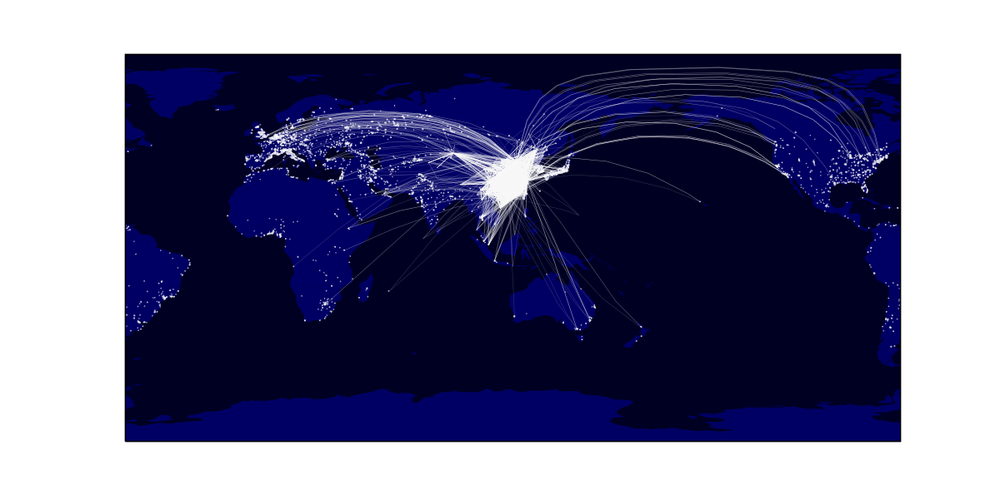
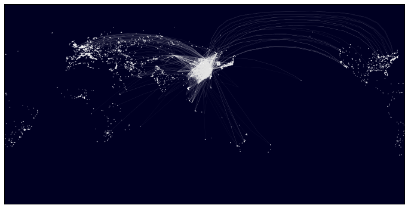

李根 published a wonderful article on cos.name, with an R script drawing a beautiful pic of a flight route night-scene world map. You can check his post on http://cos.name/2014/09/visualizing-flights-data/.
I've been learning and using python, matplotlib, pandas in my reasearch work for almost a year. Recently I'm trying using cartopy to draw some simple distribution map. Naturally I wondered how to simulate it in python. So I wrote a python script as following.
Do note that this is only a partial simulation, not all. Partly because I do not actually know R.
{#% notebook simulation-of-an-R-script-drawing-a-night-scene-map.ipynb %}
The liquid-notebook plugin doesn't work after an upgrade of ipython. So I'll just paste the code and the result here.
# coding: utf-8
import pandas as pd
import cartopy.crs as ccrs
from cartopy.io.shapereader import Reader
#load the airports data
airports = pd.read_csv('airports.dat', delimiter=',', header=None, index_col=0,
names=['id', 'name', 'city', 'country', 'faa', 'icao',
'lat', 'lon', 'alt', 'tz', 'dst'])
china_airports = airports[airports['country']=='China']
#load the airlines data
airlines = pd.read_csv('airlines.dat', delimiter=',', header=None, index_col=0,
na_values='\\N',
names=['id', 'name', 'alias', 'iata', 'icao', 'callsign',
'country', 'active'])
#load the routes data
routes = pd.read_csv('routes.dat', delimiter=',', header=None, index_col=0,
na_values='\\N', names=['airline', 'airlineid', 's-port',
's-port-id', 'd-port',
'd-port-id', 'codeshare', 'stops', 'equipment'])
freq = routes['d-port'].value_counts()
freq.name='freq'
airports.join(freq, on='faa')
r_2 = pd.merge(routes, airports[['faa', 'lon', 'lat', 'country']],
left_on='s-port', right_on='faa', how='left')
r_3 = r_2.rename(columns={'lon': 'slon', 'lat': 'slat'})
r_4 = pd.merge(r_3, airports[['faa', 'lon', 'lat', 'country']],
left_on='d-port', right_on='faa', how='left')
r_5 = r_4.rename(columns={'lon': 'dlon', 'lat': 'dlat'})
r = r_5.drop(['airlineid', 's-port-id', 'd-port-id', 'codeshare',
'stops', 'equipment', 'faa_x', 'faa_y'], axis='columns')
r = r[(r['country_x'] == 'China')]
r = r.dropna(axis='rows', how='any')
# draw a map
fig = plt.figure(figsize=(12, 6))
ax = plt.axes(projection=ccrs.PlateCarree(central_longitude=115))
ax.set_extent([-180, 180, -90, 90])
# base map
f = '110m_cultural/ne_110m_admin_0_countries.shp'
ax.add_geometries(Reader(f).geometries(), ccrs.PlateCarree(), color='none',
facecolor='b', alpha=0.3)
ax.background_patch.set_color('#000022')
# urban
urbanfile = '50m_cultural/ne_50m_urban_areas.shp'
ax.add_geometries(Reader(urbanfile).geometries(), ccrs.PlateCarree(),
color='w', alpha=0.7)
ax.plot([r['slon'].values, r['dlon'].values], [r['slat'].values, r['dlat'].values],
linewidth=0.3, alpha=0.1, transform=ccrs.Geodetic(), color='w')
plt.show()

There is a weird issue. After upgrading some packages, the same script in a second notebook shows a different map as folloing:
